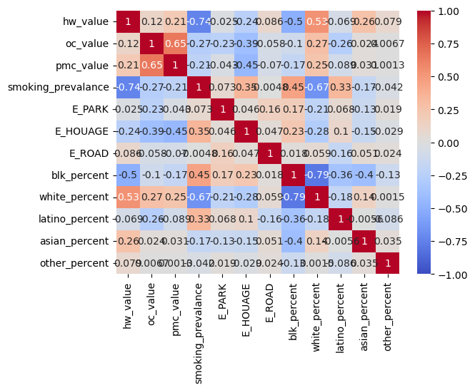
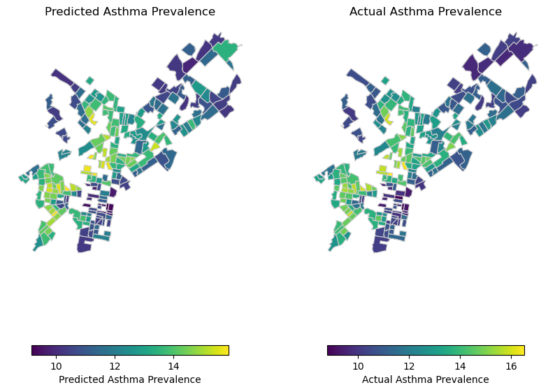

# Regression Analysis & Cross-ValidationC:\Users\cruse\mambaforge1\envs\musa-550-fall-2023\lib\site-packages\libpysal\cg\alpha_shapes.py:39: NumbaDeprecationWarning: The 'nopython' keyword argument was not supplied to the 'numba.jit' decorator. The implicit default value for this argument is currently False, but it will be changed to True in Numba 0.59.0. See https://numba.readthedocs.io/en/stable/reference/deprecation.html#deprecation-of-object-mode-fall-back-behaviour-when-using-jit for details.
def nb_dist(x, y):
C:\Users\cruse\mambaforge1\envs\musa-550-fall-2023\lib\site-packages\libpysal\cg\alpha_shapes.py:165: NumbaDeprecationWarning: The 'nopython' keyword argument was not supplied to the 'numba.jit' decorator. The implicit default value for this argument is currently False, but it will be changed to True in Numba 0.59.0. See https://numba.readthedocs.io/en/stable/reference/deprecation.html#deprecation-of-object-mode-fall-back-behaviour-when-using-jit for details.
def get_faces(triangle):
C:\Users\cruse\mambaforge1\envs\musa-550-fall-2023\lib\site-packages\libpysal\cg\alpha_shapes.py:199: NumbaDeprecationWarning: The 'nopython' keyword argument was not supplied to the 'numba.jit' decorator. The implicit default value for this argument is currently False, but it will be changed to True in Numba 0.59.0. See https://numba.readthedocs.io/en/stable/reference/deprecation.html#deprecation-of-object-mode-fall-back-behaviour-when-using-jit for details.
def build_faces(faces, triangles_is, num_triangles, num_faces_single):
C:\Users\cruse\mambaforge1\envs\musa-550-fall-2023\lib\site-packages\libpysal\cg\alpha_shapes.py:261: NumbaDeprecationWarning: The 'nopython' keyword argument was not supplied to the 'numba.jit' decorator. The implicit default value for this argument is currently False, but it will be changed to True in Numba 0.59.0. See https://numba.readthedocs.io/en/stable/reference/deprecation.html#deprecation-of-object-mode-fall-back-behaviour-when-using-jit for details.
def nb_mask_faces(mask, faces):## Plotting A Correlation MatrixCode
regression_df = pd.read_csv('regression_df.csv')Code
model = LinearRegression()
modelLinearRegression()In a Jupyter environment, please rerun this cell to show the HTML representation or trust the notebook.
On GitHub, the HTML representation is unable to render, please try loading this page with nbviewer.org.
LinearRegression()
Code
X = regression_df[['hw_value', 'oc_value', 'pmc_value', 'E_PARK', 'E_HOUAGE', 'smoking_prevalance','E_ROAD','blk_percent','white_percent','latino_percent', 'asian_percent', 'other_percent']].values
y = regression_df['asthma_prevalance'].valuesCode
feature_cols = [col for col in regression_df.columns if col not in ["asthma_prevalance", "geoid"]]
train_set, test_set = train_test_split(regression_df, test_size=0.3, random_state=42)
y_train = train_set["asthma_prevalance"].values
y_test = test_set["asthma_prevalance"].values
X_train = train_set[feature_cols].values
X_test = test_set[feature_cols].valuesCode
sns.heatmap(
train_set[feature_cols].corr(),
cmap="coolwarm",
annot=True,
vmin=-1,
vmax=1
);
Code
X.shape(1179, 12)Code
y.shape(1179,)Code
model.fit(X, y)LinearRegression()In a Jupyter environment, please rerun this cell to show the HTML representation or trust the notebook.
On GitHub, the HTML representation is unable to render, please try loading this page with nbviewer.org.
LinearRegression()
Code
Rsq = model.score(X, y)
Rsq0.8813734475169395Code
linear_pipe = make_pipeline(StandardScaler(), LinearRegression())
print("Linear regression")
linear_pipe.fit(X_train, y_train)
training_score = linear_pipe.score(X_train, y_train)
print(f"Training Score = {training_score}")
test_score = linear_pipe.score(X_test, y_test)
print(f"Test Score = {test_score}")Linear regression
Training Score = 0.8771018545312711
Test Score = 0.889628138385183Code
forest_pipe = make_pipeline(
StandardScaler(), # Pre-process step
RandomForestRegressor(n_estimators=100, max_depth=2, random_state=42), # Model step
)
print("Random forest")
forest_pipe.fit(X_train, y_train)
training_score = forest_pipe.score(X_train, y_train)
print(f"Training Score = {training_score}")
test_score = forest_pipe.score(X_test, y_test)
print(f"Test Score = {test_score}")Random forest
Training Score = 0.802226720882675
Test Score = 0.7982253593098484Code
forest_pipe.named_steps
forest_model = forest_pipe['randomforestregressor']Code
forest_model.feature_importances_array([0.13976872, 0. , 0. , 0.3803543 , 0. ,
0. , 0. , 0.04474563, 0.43513135, 0. ,
0. , 0. ])Code
importance = pd.DataFrame(
{"Feature": feature_cols, "Importance": forest_model.feature_importances_}
).sort_values("Importance", ascending=False)Code
importance| Feature | Importance | |
|---|---|---|
| 8 | white_percent | 0.435131 |
| 3 | smoking_prevalance | 0.380354 |
| 0 | hw_value | 0.139769 |
| 7 | blk_percent | 0.044746 |
| 1 | oc_value | 0.000000 |
| 2 | pmc_value | 0.000000 |
| 4 | E_PARK | 0.000000 |
| 5 | E_HOUAGE | 0.000000 |
| 6 | E_ROAD | 0.000000 |
| 9 | latino_percent | 0.000000 |
| 10 | asian_percent | 0.000000 |
| 11 | other_percent | 0.000000 |
Code
import hvplot.pandas
importance.sort_values("Importance", ascending=True).hvplot.barh(
x="Feature", y="Importance", title="Factors that Impact Asthma Prevalance"
)Code
model = linear_pipe['linearregression']Code
linear_pipe = make_pipeline(StandardScaler(), LinearRegression())
# Run the 3-fold cross validation
scores = cross_val_score(
linear_pipe,
X_train,
y_train,
cv=3,
)
# Report
print("R^2 scores = ", scores)
print("Scores mean = ", scores.mean())
print("Score std dev = ", scores.std())R^2 scores = [0.87672721 0.86979481 0.86632107]
Scores mean = 0.8709476945361351
Score std dev = 0.004325797875727253Code
forest_pipe = make_pipeline(
StandardScaler(), RandomForestRegressor(n_estimators=100, random_state=42)
)
# Run the 3-fold cross validation
scores = cross_val_score(
forest_pipe,
X_train,
y_train,
cv=3,
)
# Report
print("R^2 scores = ", scores)
print("Scores mean = ", scores.mean())
print("Score std dev = ", scores.std())R^2 scores = [0.8692119 0.91654952 0.9188434 ]
Scores mean = 0.9015349385674881
Score std dev = 0.022875019221878082Code
pipe = make_pipeline(StandardScaler(), RandomForestRegressor(random_state=42))
pipePipeline(steps=[('standardscaler', StandardScaler()),
('randomforestregressor',
RandomForestRegressor(random_state=42))])In a Jupyter environment, please rerun this cell to show the HTML representation or trust the notebook. On GitHub, the HTML representation is unable to render, please try loading this page with nbviewer.org.
Pipeline(steps=[('standardscaler', StandardScaler()),
('randomforestregressor',
RandomForestRegressor(random_state=42))])StandardScaler()
RandomForestRegressor(random_state=42)
Code
pipe.named_steps{'standardscaler': StandardScaler(),
'randomforestregressor': RandomForestRegressor(random_state=42)}Code
model_step = "randomforestregressor"
param_grid = {
f"{model_step}__n_estimators": [5, 10, 15, 20, 30, 50, 100, 200],
f"{model_step}__max_depth": [2, 5, 7, 9, 13, 21, 33, 51],
}
param_grid{'randomforestregressor__n_estimators': [5, 10, 15, 20, 30, 50, 100, 200],
'randomforestregressor__max_depth': [2, 5, 7, 9, 13, 21, 33, 51]}Code
grid = GridSearchCV(pipe, param_grid, cv=3, verbose=1)
grid.fit(X_train, y_train)Fitting 3 folds for each of 64 candidates, totalling 192 fitsGridSearchCV(cv=3,
estimator=Pipeline(steps=[('standardscaler', StandardScaler()),
('randomforestregressor',
RandomForestRegressor(random_state=42))]),
param_grid={'randomforestregressor__max_depth': [2, 5, 7, 9, 13,
21, 33, 51],
'randomforestregressor__n_estimators': [5, 10, 15, 20,
30, 50, 100,
200]},
verbose=1)In a Jupyter environment, please rerun this cell to show the HTML representation or trust the notebook. On GitHub, the HTML representation is unable to render, please try loading this page with nbviewer.org.
GridSearchCV(cv=3,
estimator=Pipeline(steps=[('standardscaler', StandardScaler()),
('randomforestregressor',
RandomForestRegressor(random_state=42))]),
param_grid={'randomforestregressor__max_depth': [2, 5, 7, 9, 13,
21, 33, 51],
'randomforestregressor__n_estimators': [5, 10, 15, 20,
30, 50, 100,
200]},
verbose=1)Pipeline(steps=[('standardscaler', StandardScaler()),
('randomforestregressor',
RandomForestRegressor(random_state=42))])StandardScaler()
RandomForestRegressor(random_state=42)
Code
def evaluate_mape(model, X_test, y_test):
"""
Given a model and test features/targets, print out the
mean absolute error and accuracy
"""
# Make the predictions
predictions = model.predict(X_test)
# Absolute error
errors = abs(predictions - y_test)
avg_error = np.mean(errors)
# Mean absolute percentage error
mape = 100 * np.mean(errors / y_test)
# Accuracy
accuracy = 100 - mape
print("Model Performance")
print(f"Average Absolute Error: {avg_error:0.4f}")
print(f"Accuracy = {accuracy:0.2f}%.")
return accuracyCode
base_model = make_pipeline(StandardScaler(), RandomForestRegressor(random_state=42))
# Fit the training set
base_model.fit(X_train, y_train)
# Evaluate on the test set
base_accuracy = evaluate_mape(base_model, X_test, y_test)Model Performance
Average Absolute Error: 0.2733
Accuracy = 97.68%.Code
data = regression_df.loc[test_set.index]censustracts = gpd.read_file('Census_Tracts_2010.geojson')
tract_and_geoid = censustracts[['GEOID10', 'TRACTCE10']]
tract_and_geoid = tract_and_geoid.rename(columns = {'TRACTCE10':'tract'})
censustracts = censustracts[['GEOID10', 'geometry']]
censustracts = censustracts.rename(columns = {'GEOID10':'geoid'})
censustracts['geoid'] = censustracts['geoid'].astype(np.int64)Code
data['prediction'] = base_model.predict(X_test)
data.to_csv('data.csv', index=False)Code
data = pd.merge(data, censustracts, on='geoid', how ='inner')Code
data = gpd.GeoDataFrame(data, geometry = 'geometry')Code
fig, axs = plt.subplots(ncols=2, figsize=(10, 10))
# Predicted values
data.plot(
ax=axs[0],
column='prediction',
legend=True,
cmap='viridis',
linewidth=0.8,
edgecolor='0.8',
legend_kwds={'label': "Predicted Asthma Prevalence", 'orientation': "horizontal", 'shrink': 0.8}
)
axs[0].set_title("Predicted Asthma Prevalence")
# Actual values
data.plot(
ax=axs[1],
column='asthma_prevalance',
legend=True,
cmap='viridis',
linewidth=0.8,
edgecolor='0.8',
legend_kwds={'label': "Actual Asthma Prevalence", 'orientation': "horizontal", 'shrink': 0.8}
)
axs[1].set_title("Actual Asthma Prevalence")
axs[0].set_axis_off()
axs[1].set_axis_off()
plt.show()
Code
TypeError: Cannot interpret '<geopandas.array.GeometryDtype object at 0x00000286BF603E80>' as a data type